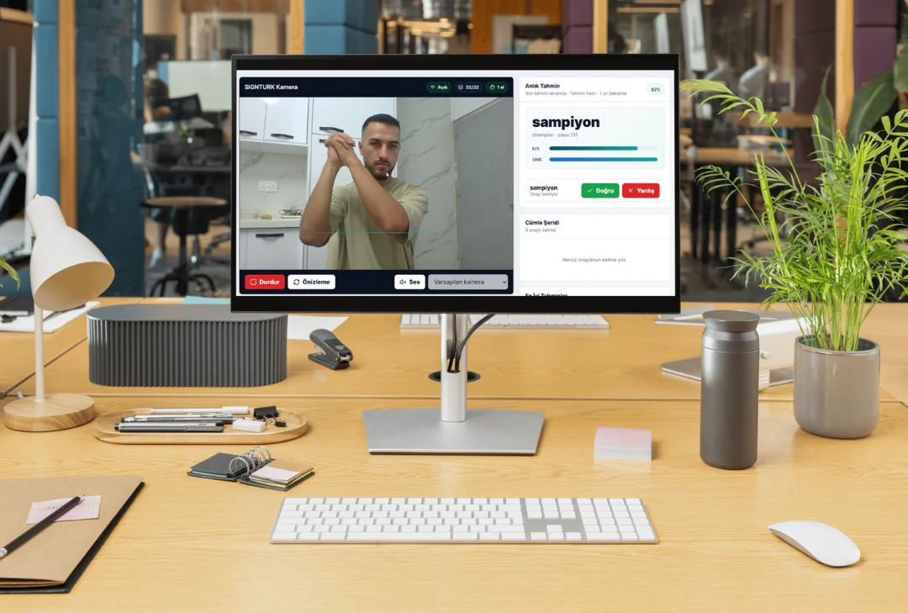
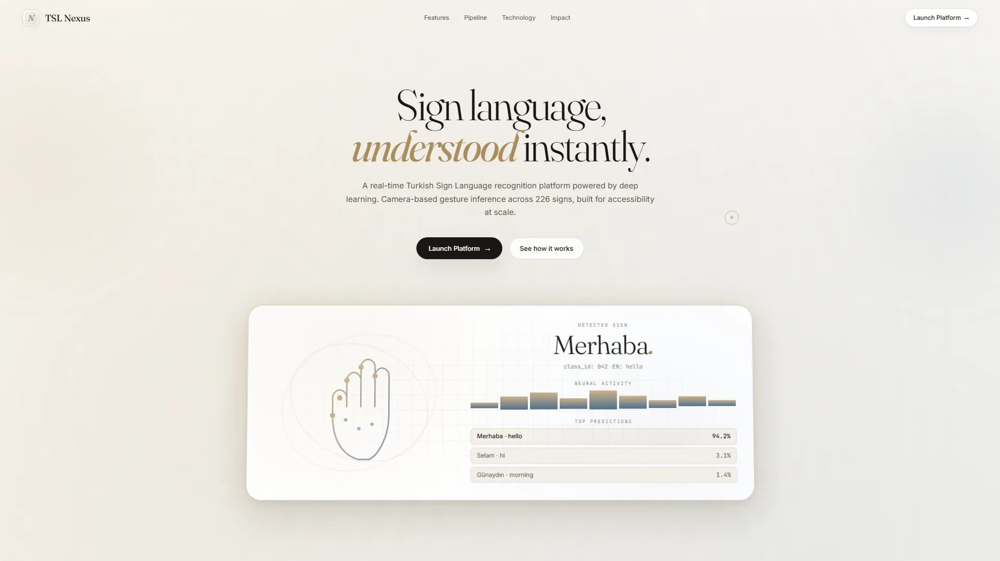
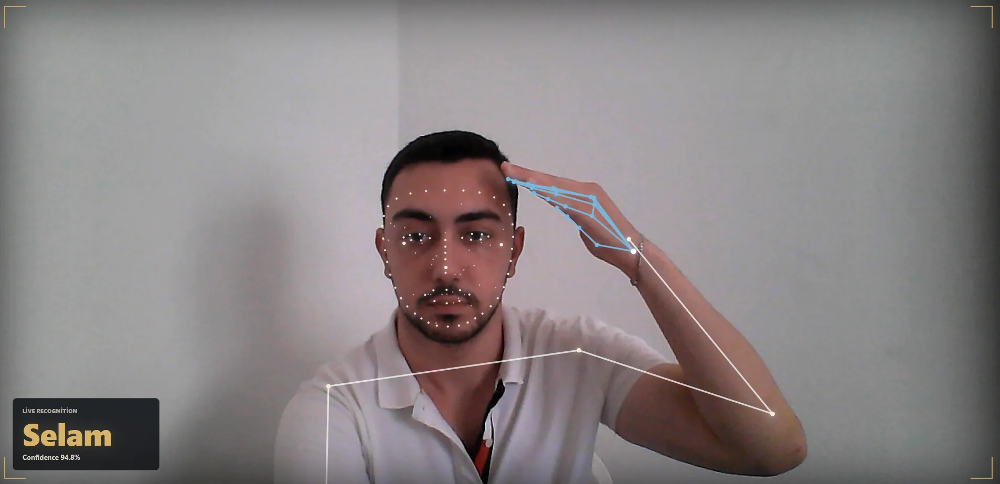
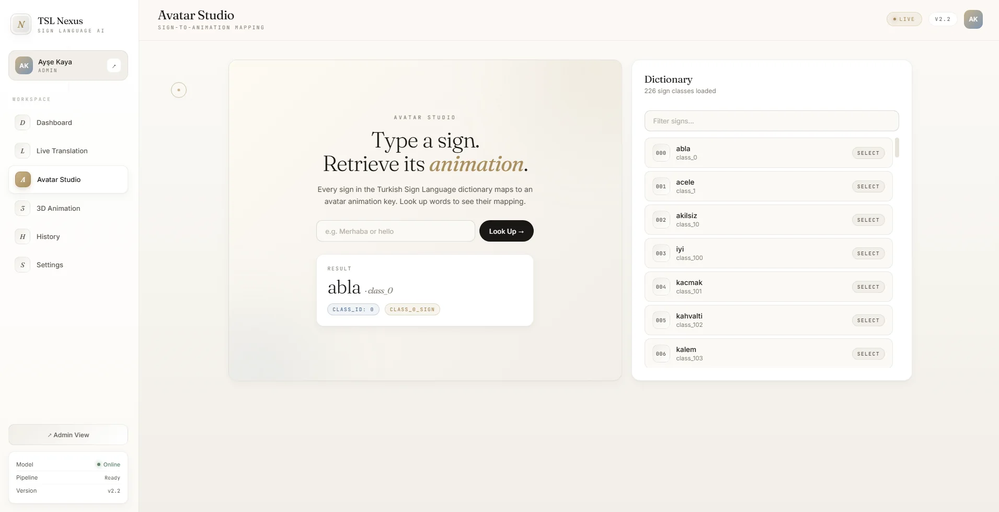
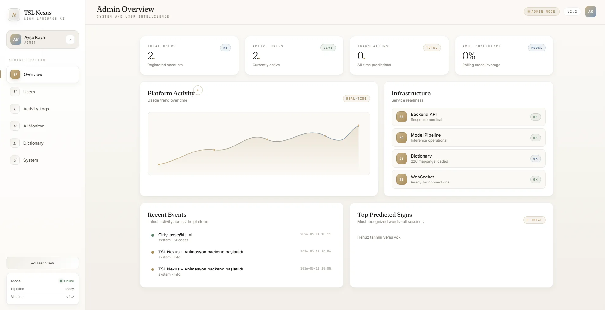
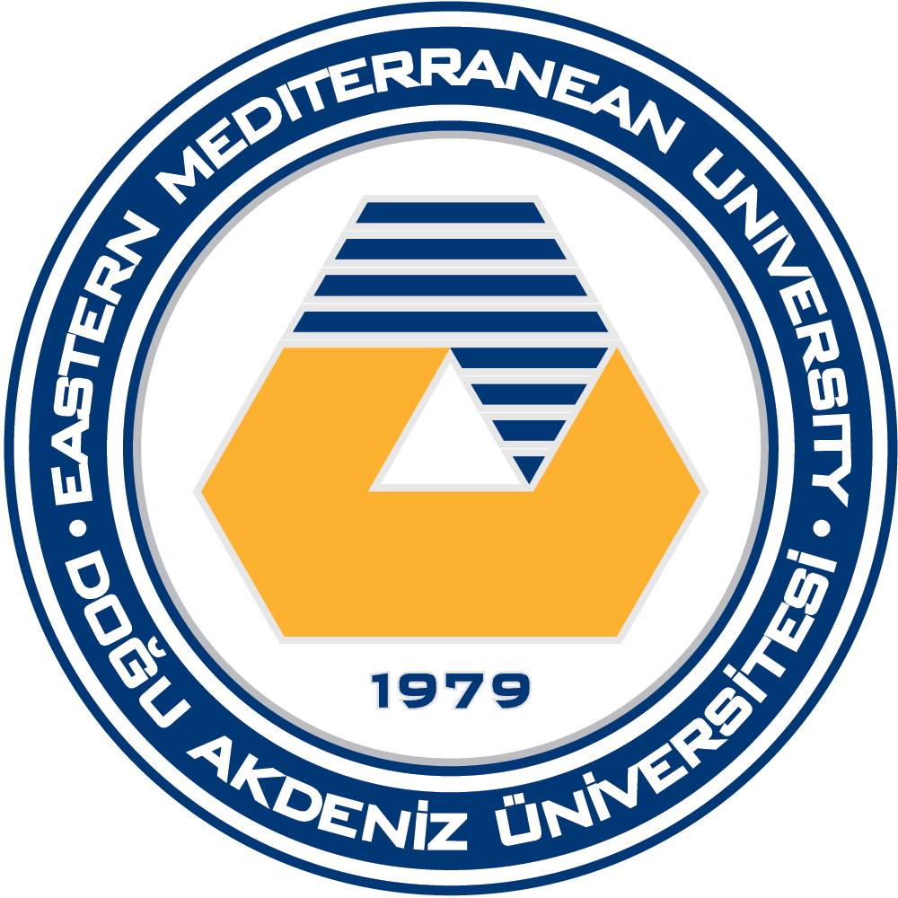
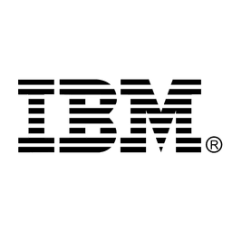

Eastern Mediterranean University · 2025–2026
Outstanding Project Award
SignTurk was selected as an outstanding graduation project by the Faculty of Engineering, Department of Computer Engineering.
View the award and productEastern Mediterranean University · 2025–2026
SignTurk was selected as an outstanding graduation project by the Faculty of Engineering, Department of Computer Engineering.
View the award and productSelected work
A focused selection of systems I can explain from architecture to trade-offs.
TÜBİTAK BiGG / BİGGNITE · First stage passed
An AI-assisted order assistant turning Turkish B2B messages into catalog-validated drafts, with human confirmation at the center.





Real-time Turkish Sign Language recognition, approved-word sentence assembly, speech output, persistence, and 3D animation.
An offline-first PostgreSQL execution-plan assistant with read-only SQL controls, recursive EXPLAIN JSON analysis, deterministic diagnostics, and Foundry Local retrieval.
A multi-tenant support backend with transactional ticket workflows, append-only audit events, and retry-safe document ingestion.
Professional journey
Production-minded work across backend AI systems, retrieval-augmented applications, and enterprise software engineering.
FlyRank.ai
Jul 2026 – Sep 2026
Usage Metering & Billing Engine

Microsoft Türkiye
Jun 2026 – Jul 2026
QueryPilot — Evidence-First PostgreSQL Performance Assistant
İSKUR Holding
Jun 2024 – Aug 2024
Profile
I am a Software Engineer specializing in Python backend and AI systems. I build production-oriented APIs and retrieval-augmented applications, with hands-on experience in real-time inference, computer vision, async data workflows, and measurable AI services.

B.Sc. in Software EngineeringEastern Mediterranean University · 2021–2026ABET-accredited · 100% English-taught programmeFinal semester GPA
EF SET English proficiency · 71/100
Software Engineering graduate
Remote and relocation ready
Continued learning
Selected certificates and technical learning programmes.
Eastern Mediterranean University
Stanford University · DeepLearning.AI

Eastern Mediterranean University

BTK Akademi
Selected excerpts from signed reference letters.
“He is a highly motivated individual – working very well in teams and at the same time can take the initiative in leading the team…”
“Eray is a hardworking and dependable individual who is capable of working both independently and as part of a team.”
Signed letters are available to employers on request. Personal contact details are not published.
Available for the right opportunity
Open to worldwide remote roles, onsite opportunities in Türkiye, and international relocation. My strongest direction is Software Engineering across Python backend, AI systems, and real-time inference.
eraykulkizaga@hotmail.com